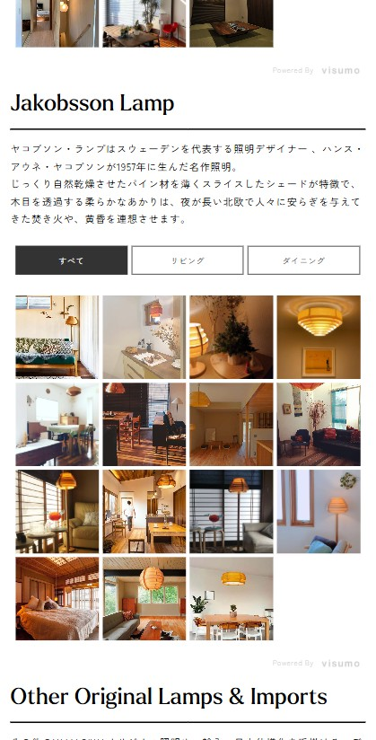
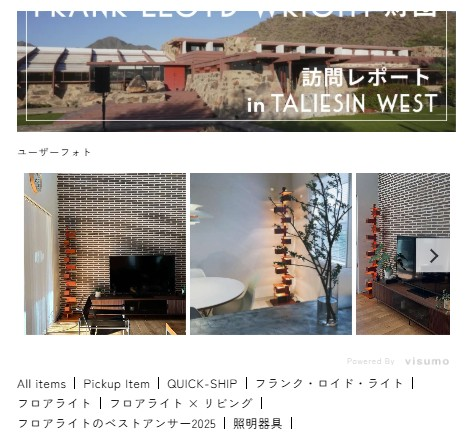

ユーザー生成コンテンツの導入
実例写真で、
購入の迷いを減らす。
商品単体の写真だけでは、実際の住空間に設置した際のイメージを具体化しにくいことが課題でした。そこで、Instagramの実例写真を活用し、使用事例を探せるコンテンツページと商品ページの両方に導線を設計。対象商品の2024年度売上は、前年度比約1.2倍となりました。

約1.2倍対象商品の売上2024年度実績・2023年度比／対象：オリジナル照明（タリアセン、マユハナ、ヤコブソン など）
Purpose目的
使用イメージを具体化し、購入検討時の不安や迷いを軽減する。
Issue課題
商品単体の写真だけでは、住空間との相性や設置後の雰囲気を判断しにくかった。
Action施策
UGCツール「visumo」を導入し、Instagramの実例写真を活用。検討段階に応じて、コンテンツページと商品ページに導線を設けた。
Two Approaches検討段階に合わせた2つの導線
購入検討段階によって必要な情報が異なると考え、商品との出会いから購入判断までを支える2つの導線を設計しました。


Projectプロジェクト情報
- 担当
- 企画設計／導入検討／コンテンツ構成／掲載導線設計／運用設計
- 使用ツール
- visumo（Instagram投稿を活用した使用事例コンテンツの掲載）